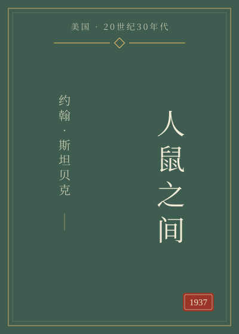
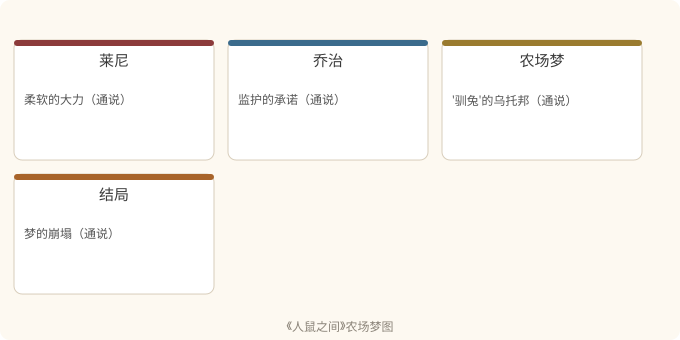

人鼠之间
一、基本信息
| 作者 | 斯坦贝克 |
|---|---|
| 成书/出版 | 1937年（作者页注记：Britannica——人鼠之间 (1937)） John Steinbeck — Encyclopaedia Britannica（百科全书） |
| 国别/地区 | 美国 |
| 时代 | 现当代 · 20世纪30年代 |
| 体裁 | 中篇小说 |
| 语言 | 英语 |

《人鼠之间》农场梦图（主题·结构图）
二、创作背景
作者页注记：人鼠之间 (1937)——'短篇经典（Britannica）'。
Britannica：斯坦贝克——加州农业劳工书写传统（作者页语境——待核）。
题材（通说待核）：流动工人莱尼与乔治的'农场梦'与悲剧结局。
三、内容脉络
（通说待核）两个流动工人的友谊：大块头莱尼与监护人乔治。
（通说待核）'驯兔的农场'梦与意外杀人。
四、主要人物表
| 人物 | 身份 | 说明 |
|---|---|---|
| 莱尼 | 大力但智弱 | （通说待核） |
| 乔治 | 同伴 | （通说待核） |
五、主题与艺术特点
- 流浪劳工的生存（通说待核）。
- '农场梦'的破灭（通说待核）。
- 友谊与 mercy 杀（通说待核）。
六、影响与评论
- Britannica：斯坦贝克1962诺奖（作者页语境——待核）。
John Steinbeck — Encyclopaedia Britannica（百科全书） - Britannica：《愤怒的葡萄》作者级定位（作者页交叉）。
John Steinbeck — Encyclopaedia Britannica（百科全书）
七、阅读建议
难点
- 大萧条加州农业史。
- '小剧场'式的章节结构（通说待核）。
- 《人鼠之间》中译本（人民文学等——通说待核）。
- 英文原版。
斯坦贝克入门首选；后接《愤怒的葡萄》《伊甸之东》。
八、待核实
- 莱尼/乔治全名核对（通说）。
- 1937年出版（Covici-Friede说）待核。
- 与彭斯诗'To a Mouse'书名关系待核。
本页主要来源
相关作品：伊甸之东